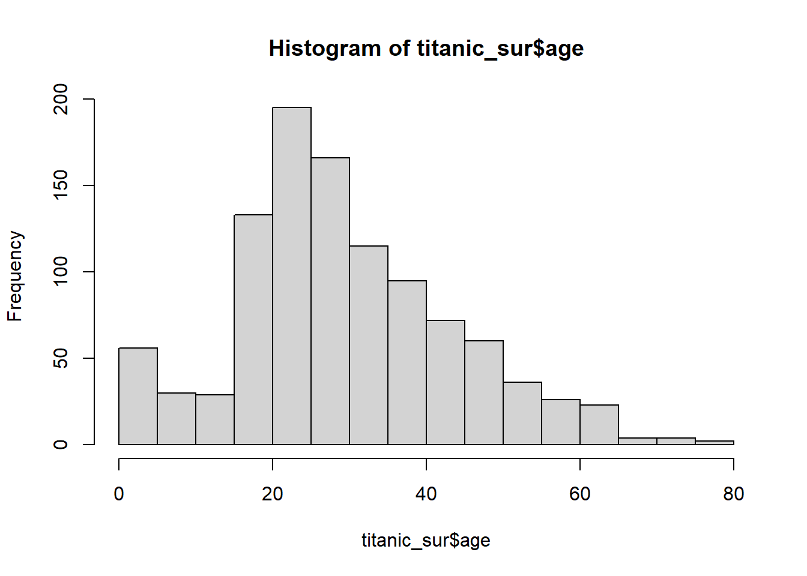
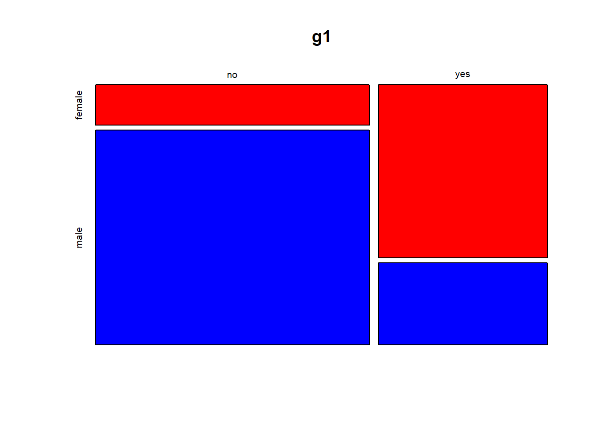
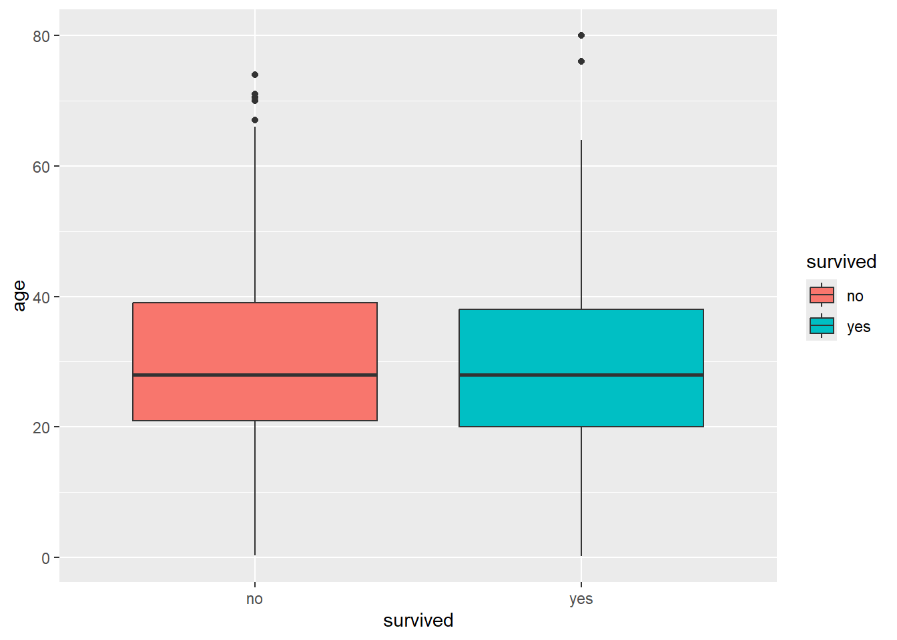
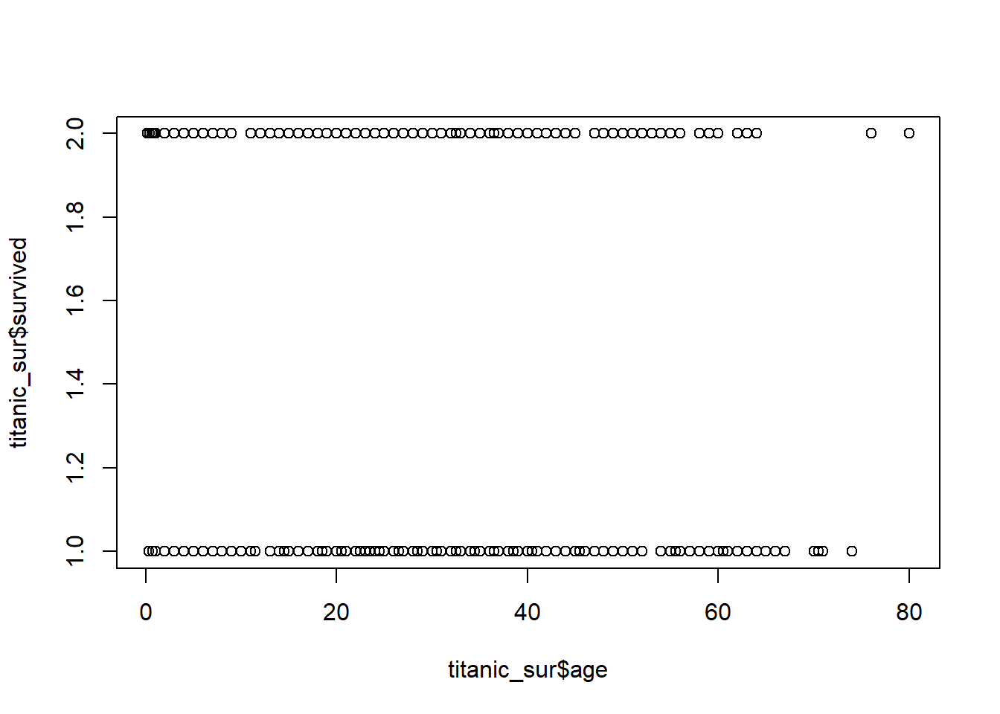

library(tidyverse)
library(tidymodels)
library(GGally)
library(skimr)
library(nortest)
library(car)
library(performance)
library(carData)
library(janitor)Clasificacion - Regresion logistica
Cargar librerias
Cargar datos
El conjunto de datos, denominado “TitanicSurvival”, contiene información sobre los pasajeros del Titanic, incluyendo si sobrevivieron o no al hundimiento del barco. Los datos se pueden cargar con la función data() de R. Los datos contienen las siguientes variables: - Superviviencia: indica si el pasajero sobrevivió o no al hundimiento del Titanic.
titanic_sur <- TitanicSurvival
head(titanic_sur) survived sex age passengerClass
Allen, Miss. Elisabeth Walton yes female 29.0000 1st
Allison, Master. Hudson Trevor yes male 0.9167 1st
Allison, Miss. Helen Loraine no female 2.0000 1st
Allison, Mr. Hudson Joshua Crei no male 30.0000 1st
Allison, Mrs. Hudson J C (Bessi no female 25.0000 1st
Anderson, Mr. Harry yes male 48.0000 1stAnalisis exploratorio de datos EDA
str() y glimpse() son dos funciones que se pueden utilizar para obtener información sobre la estructura de un conjunto de datos. La función str() proporciona información sobre la estructura de un objeto en R, incluyendo el tipo de datos de cada columna y la longitud del objeto. La función glimpse() proporciona información similar, pero en un formato más legible.
skim() es una función que proporciona un resumen de las estadísticas descriptivas de un conjunto de datos, incluyendo el número de observaciones, el número de variables, el número de valores faltantes, la media, la mediana, la desviación estándar, el mínimo y el máximo de cada variable.
table() es una función que se puede utilizar para obtener una tabla de frecuencias de una variable categórica. En este caso, se utiliza para obtener una tabla de frecuencias de la variable “survived” del conjunto de datos “titanic_sur”.
tabyl() es una función que se puede utilizar para obtener una tabla de frecuencias de una variable categórica. En este caso, se utiliza para obtener una tabla de frecuencias de la variable “survived” del conjunto de datos “titanic_sur”.
count() es una función que se puede utilizar para contar el número de observaciones en cada grupo de una variable categórica. En este caso, se utiliza para contar el número de observaciones en cada grupo de la variable “survived” del conjunto de datos “titanic_sur”.
group_by() y summarise() son funciones que se pueden utilizar para agrupar un conjunto de datos por una variable categórica y calcular estadísticas resumen para cada grupo. En este caso, se utiliza para agrupar el conjunto de datos “titanic_sur” por la variable “survived” y calcular el número de observaciones en cada grupo.
str(titanic_sur)'data.frame': 1309 obs. of 4 variables:
$ survived : Factor w/ 2 levels "no","yes": 2 2 1 1 1 2 2 1 2 1 ...
$ sex : Factor w/ 2 levels "female","male": 1 2 1 2 1 2 1 2 1 2 ...
$ age : num 29 0.917 2 30 25 ...
$ passengerClass: Factor w/ 3 levels "1st","2nd","3rd": 1 1 1 1 1 1 1 1 1 1 ...glimpse(titanic_sur)Rows: 1,309
Columns: 4
$ survived <fct> yes, yes, no, no, no, yes, yes, no, yes, no, no, yes, y…
$ sex <fct> female, male, female, male, female, male, female, male,…
$ age <dbl> 29.0000, 0.9167, 2.0000, 30.0000, 25.0000, 48.0000, 63.…
$ passengerClass <fct> 1st, 1st, 1st, 1st, 1st, 1st, 1st, 1st, 1st, 1st, 1st, …skim(titanic_sur)| Name | titanic_sur |
| Number of rows | 1309 |
| Number of columns | 4 |
| _______________________ | |
| Column type frequency: | |
| factor | 3 |
| numeric | 1 |
| ________________________ | |
| Group variables | None |
Variable type: factor
| skim_variable | n_missing | complete_rate | ordered | n_unique | top_counts |
|---|---|---|---|---|---|
| survived | 0 | 1 | FALSE | 2 | no: 809, yes: 500 |
| sex | 0 | 1 | FALSE | 2 | mal: 843, fem: 466 |
| passengerClass | 0 | 1 | FALSE | 3 | 3rd: 709, 1st: 323, 2nd: 277 |
Variable type: numeric
| skim_variable | n_missing | complete_rate | mean | sd | p0 | p25 | p50 | p75 | p100 | hist |
|---|---|---|---|---|---|---|---|---|---|---|
| age | 263 | 0.8 | 29.88 | 14.41 | 0.17 | 21 | 28 | 39 | 80 | ▂▇▅▂▁ |
table(titanic_sur$survived)
no yes
809 500 titanic_sur |> group_by(survived) |> summarise(recuento = n())# A tibble: 2 × 2
survived recuento
<fct> <int>
1 no 809
2 yes 500titanic_sur |> count(survived) survived n
1 no 809
2 yes 500titanic_sur |> tabyl(survived) survived n percent
no 809 0.618029
yes 500 0.381971adorn_pct_formatting() es una función que se puede utilizar para dar formato a una tabla de frecuencias para que los valores se muestren como porcentajes en lugar de recuentos. En este caso, se utiliza para dar formato a la tabla de frecuencias de la variable “survived” del conjunto de datos “titanic_sur”.
tabla_sur <- titanic_sur |> tabyl(survived) |> adorn_pct_formatting()
tabla_sur survived n percent
no 809 61.8%
yes 500 38.2%odds_sur <- tabla_sur[2,2]/tabla_sur[1,2] #500/809
odds_sur[1] 0.618047Las personas que sobrevivieron al Titanic tienen 0.618 veces más probabilidades de sobrevivir que las personas que no sobrevivieron.
1/odds_sur[1] 1.618Las personas que no sobrevivieron al Titanic tienen 1.618 veces más probabilidades de no sobrevivir que las personas que sobrevivieron.
Variables predictoras
tabyl(titanic_sur$sex) titanic_sur$sex n percent
female 466 0.3559969
male 843 0.6440031tabyl(titanic_sur$passengerClass) titanic_sur$passengerClass n percent
1st 323 0.2467532
2nd 277 0.2116119
3rd 709 0.5416348summary(titanic_sur$age) Min. 1st Qu. Median Mean 3rd Qu. Max. NA's
0.1667 21.0000 28.0000 29.8811 39.0000 80.0000 263 hist(titanic_sur$age)
Correlaciones
tabla_sur_sex <- titanic_sur |> tabyl(survived, sex)
tabla_sur_sex survived female male
no 127 682
yes 339 161g1 <- table(titanic_sur$survived, titanic_sur$sex)
mosaicplot(g1, color = c("red", "blue"))
chisq.test(tabla_sur_sex)
Pearson's Chi-squared test with Yates' continuity correction
data: tabla_sur_sex
X-squared = 363.62, df = 1, p-value < 2.2e-16#Ho: Independencia = 0
#Ha: Independencia != 0tabla_sur_clase <- titanic_sur |> tabyl(survived, passengerClass)
tabla_sur_clase survived 1st 2nd 3rd
no 123 158 528
yes 200 119 181chisq.test(tabla_sur_clase)
Pearson's Chi-squared test
data: tabla_sur_clase
X-squared = 127.86, df = 2, p-value < 2.2e-16#Ho: Independencia = 0
#Ha: Independencia != 0titanic_sur |> tabyl(passengerClass) passengerClass n percent
1st 323 0.2467532
2nd 277 0.2116119
3rd 709 0.5416348titanic_sur |> ggplot(aes(survived, age, fill = survived))+geom_boxplot()
plot(titanic_sur$age, titanic_sur$survived)